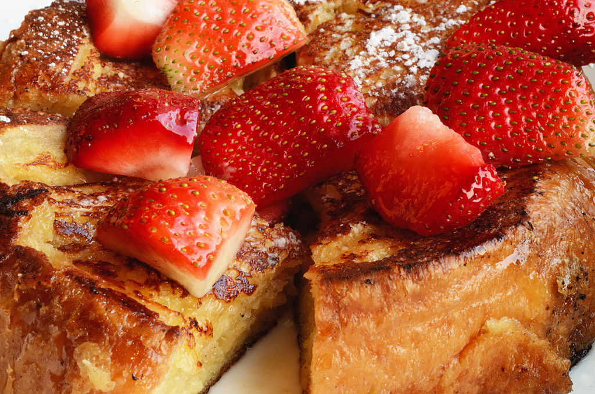

This Amazing french Toast Recipe

Hello and welcome to my second website all about food recipes im excited to start this journey
French Toast
2nd i have to go with a breakfest statementall world french toast ever since a child I loved this dish and its amazing that i can make this website
This dish includes:
- 6 thick slices bread
- 2 eggs
- 2/3 cup whole milk or half-and-half2/3 cup whole milk or half-and-half
- 1 pinch of salt
- Butter
Steps
-
Prepare the custard. Whisk together the eggs, milk, and flavorings until completely blended. Use a large bowl wide enough to dip the bread in. You can also pour the whipped custard into a baking dish for easy dipping.
- Bring water to a boil in a medium saucepan; stir in instant rice, cover, and remove from heat. Let stand for 5 minutes.
- Heat a skillet or griddle over medium heat. You want it to be hot enough to form a crust when the custard-coated bread hits the pan, but not so hot that the crust burns before the custard that's soaked into the bread has a chance to cook.
- Dip the bread in the custard, turning it to coat completely on both sides. The dryer or sturdier your bread, the longer it can soak. Melt 1 or 2 tablespoons butter in the hot skillet. Depending on how large your skillet is, place one or two slices in the hot butter. Cook until golden brown, then turn over to cook on the other side. You can keep the slices warm on a rack in a 350º F oven until the rest of the toast is cooked..